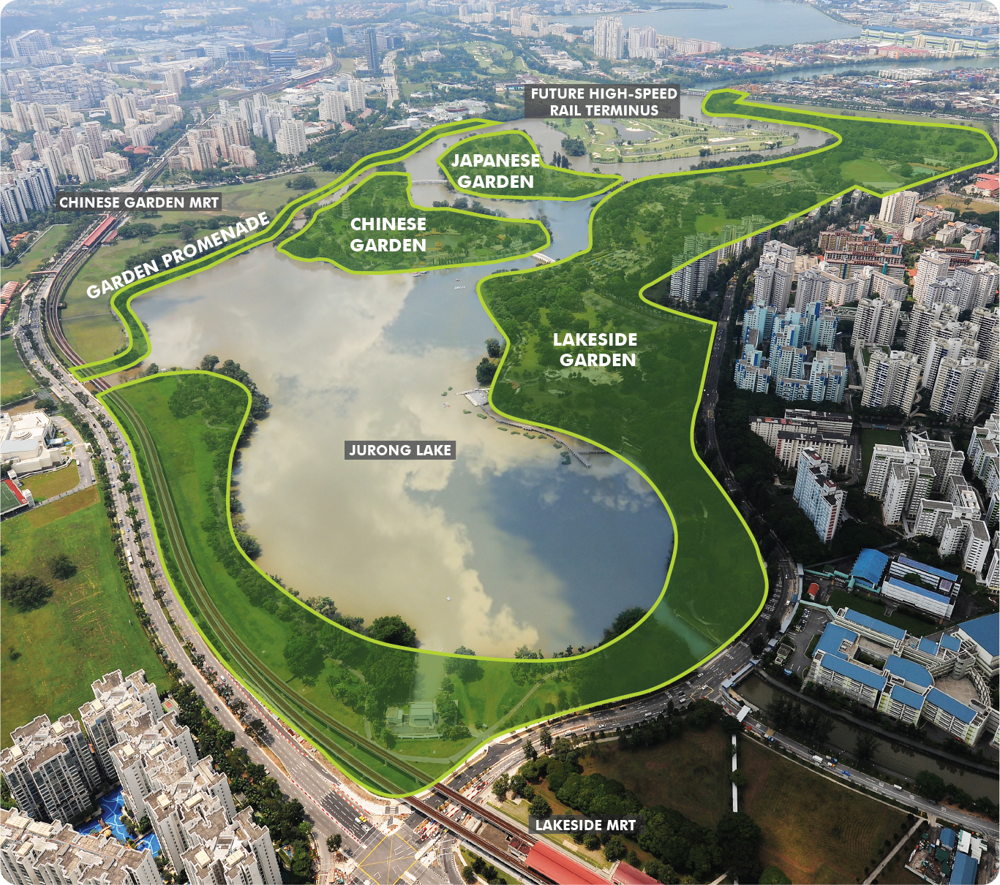

LAKESIDE GARDEN SINGAPORE
About the place
Jurong Lakeside Gardens is Singapore's new national gardens in the heartlands. It is a people's garden, where spaces will be landscaped and created for families and the community to come together!
Recently opened on 27th April 2019 after 7 long years of work is Lakeside Garden – the first section under the umbrella of Jurong Lake Gardens, which will join Botanic Gardens and GBTB as the third National Garden in Singapore.The 90-hectare Gardens comprises Lakeside Garden, Chinese and Japanese Gardens and Garden Promenade.
(Note:Chinese Garden, Japanese Garden and Garden Promenade will be completed from 2021 onwards)
